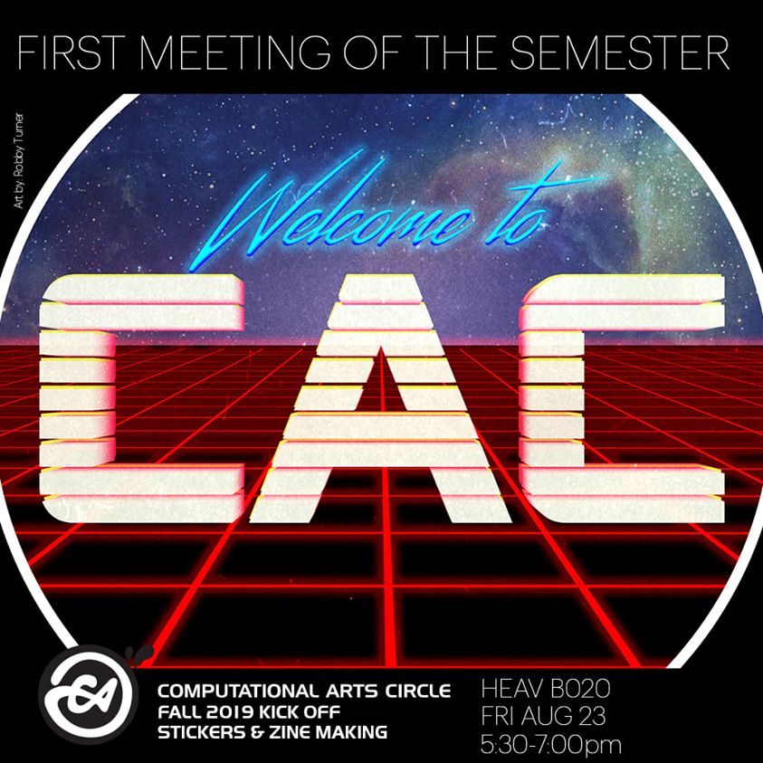
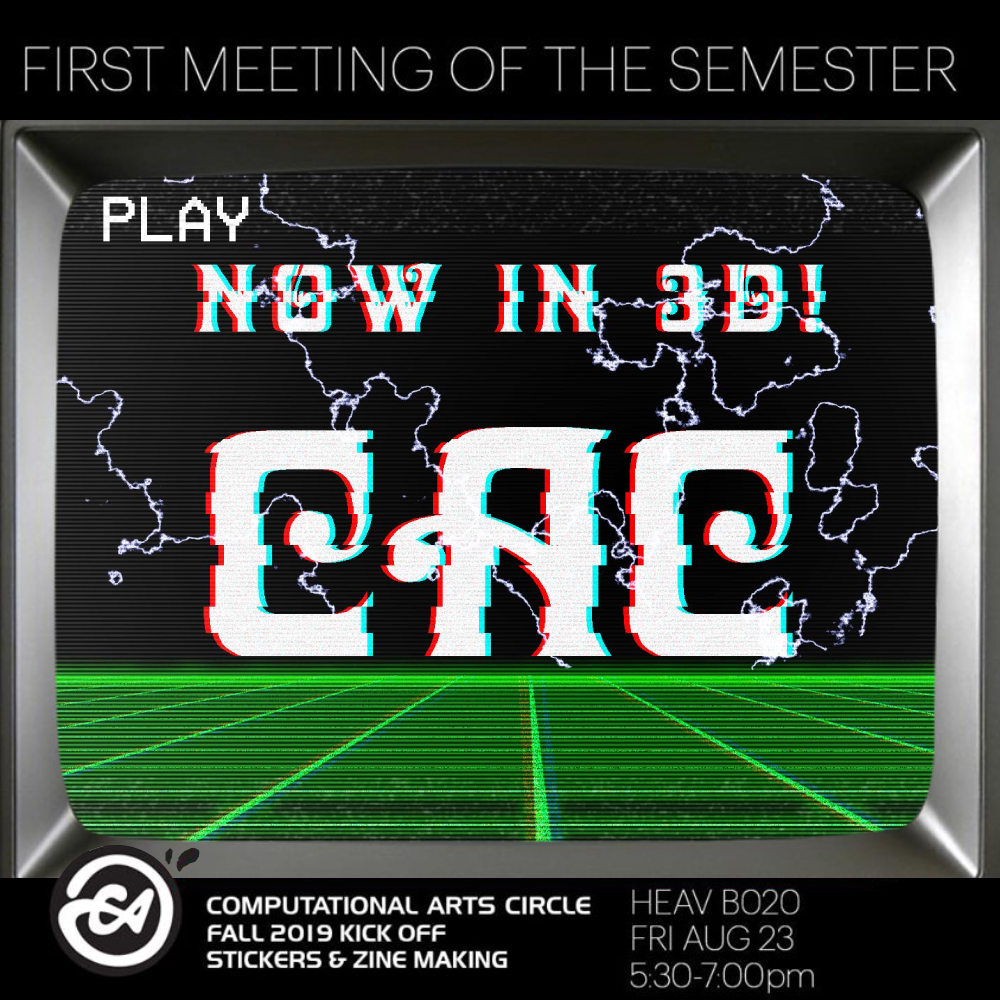
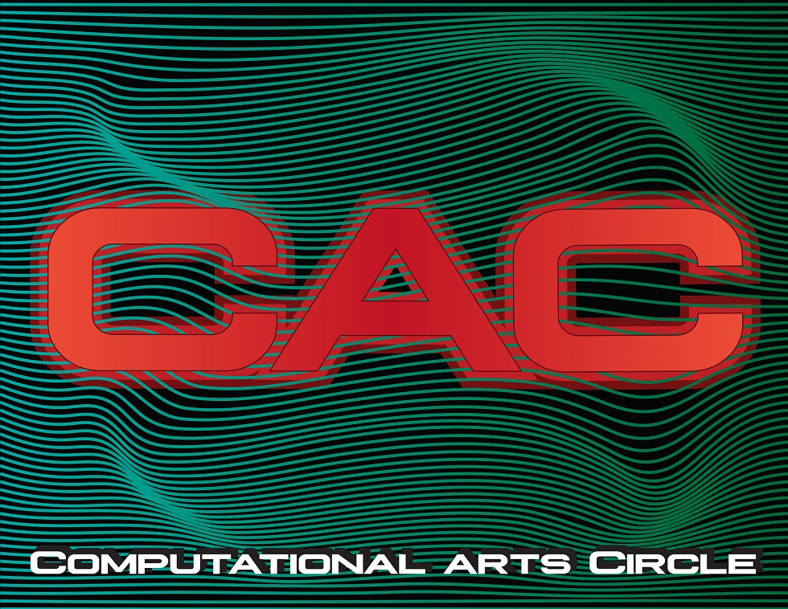
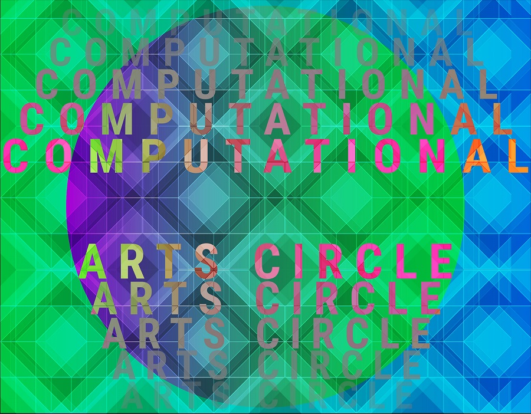
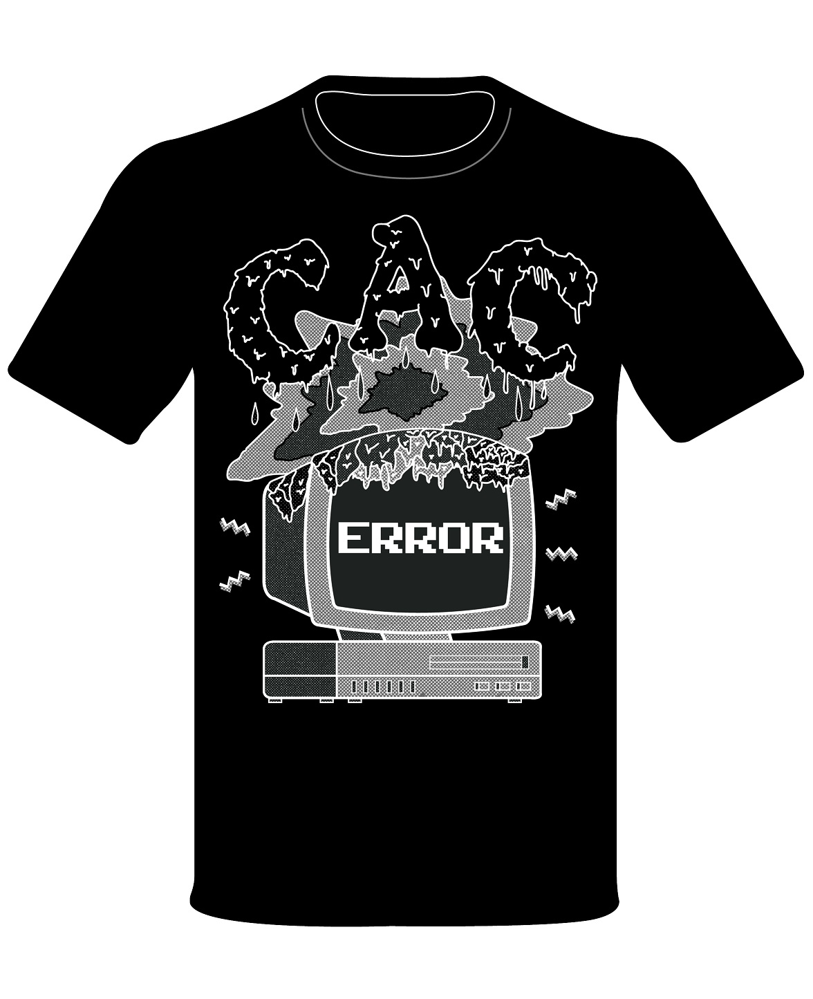
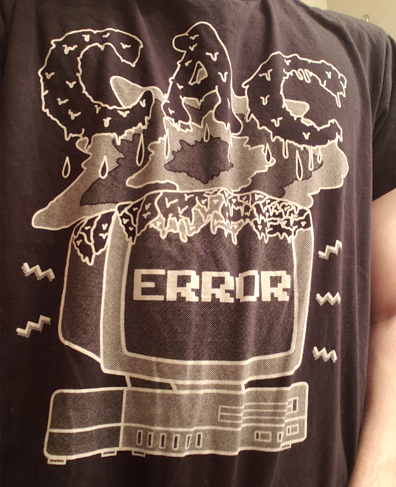

Computational Arts Circle
I worked with the Computational Arts Circle, an organization within Purdue's Computer Graphics Department. The focus of the organization is to introduce students to the newest trends in the industry of CGT as a whole, combining them with art movements and trends of past eras.
I created flyers and merchandise, including stickers and t-shirts, to help promote the organization. The goal was to highlight both facets of the club, combining the burgeoning movements in the digital arts, in addition to the rich art history that informed them.
Illustration / Branding
Flyer Designs
What I admire about the organization is how it blends the ever-present creativity of the entertainment graphics industry with the art movements of the past. I typically tried to base my designs around certain styles we would cover throughout the semester, some more faithfully than others. For these designs, I was inspired by two of my favorite sessions, based around cyberpunk/80's revivalism and glitch-based art.


Sticker Designs
For the stickers, we were given very little in terms of limitation, allowing members to really run wild with their designs. The motif of repetition really appealed to me at the time, and so the designs I ended upon included a recreation of a tesselation pattern and a warped wave pattern.


T-shirt Designs
When designing the club shirts, my goal was to visualize the marrying of the traditional arts with the "computational". In addition, I wanted to juxtapose the ideas of fluidity and surrealism with rigidity and structure, as I felt these were running themes throughout the various themed meetings. The design I ended upon I think depicts these ideas in a fun and approachable way, which is how I want the club, and artistic expression as a whole, to be represented to others.
In order to fall within the club's budget, it was recommended that I limit myself to one or two colors. This is where I was first introduced to the concept of halftones, and so to simulate the expressiveness of color, I utilized halftones to achieve the feeling of depth and expression.

